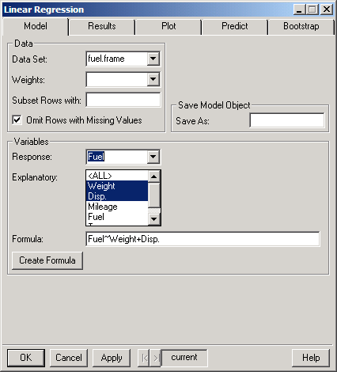
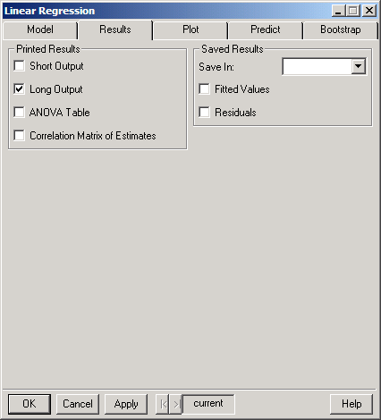
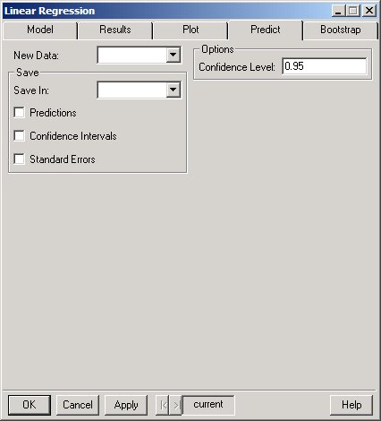
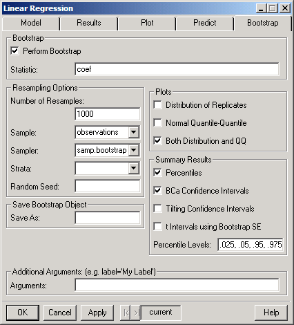

Regression
Linear/Resample.
The dialog shown below appears.
Regression
Linear/Resample.
The dialog shown below appears.S+Resample GUI Reference
|
Linear Regression
Linear regression is used to describe the effect of continuous or categorical variables upon a continuous response. It is by far the most common regression procedure.
The linear regression model assumes that the response is obtained by taking a specific linear combination of the predictors and adding random variation (error). The error is assumed to have a Gaussian (normal) distribution with constant variance and to be independent of the predictor values.
If the response of interest is not continuous, the logistic regression, log-linear regression, or generalized linear models may be appropriate. If the predictors affect the response in a nonlinear way, the nonlinear regression, local regression, or generalized additive models may be appropriate.
If the data contain outliers or the errors are not Gaussian, then robust regression may be appropriate. If the focus is on the effect of categorical variables, then ANOVA may be appropriate.
Other dialogs related to linear regression are: Stepwise Linear Regression, Compare Models, and Multiple Comparisons. The Stepwise Linear Regression dialog uses a stepwise procedure to suggest which variables to include in a model. Compare Models provides tests for determining which of several models is most appropriate. Multiple Comparisons calculates effects for categorical predictors in linear regression or ANOVA.
Traditional standard errors, confidence intervals, and hypothesis tests for linear regression rely on a number of assumptions: that the linear relationship fits (no nonlinear relationship), that residuals are independent, with the same standard deviation for every observation, and that residuals are normally-distributed. If samples sizes are reasonably large then the normality assumption is unimportant, but the other assumptions are critical. For example, if the data were generated by stratified sampling, or the residual variances are larger for some values of x than for others, then the usual standard errors are not accurate.
Bootstrapping provides a more flexible way to calculate standard errors and other inferences; it may be used to obtain valid inferences, even without the usual assumptions, provided that the bootstrapping methods reflects reality - e.g. if the data were generated using stratified sampling, then stratified bootstrapping should be used as well (the bootstrap capabilities here support stratified sampling, finite-population sampling, cluster sampling, etc.).
To perform linear regression
Choose
Statistics
Regression
Linear/Resample.
The dialog shown below appears.
Model Page
On the Model page, specify the data set and any weights to be used, the linear regression formula, and how to save the model object.
 Click individual fields in the dialog below for more specific information.
Click individual fields in the dialog below for more specific information.

Results Page
On the Results page, choose the type of printed results and how you would like the results of the analysis saved. To select or clear an option, click the check box.
Click individual fields in the dialog below for more specific information.

Plot Page
On the Plot page, choose the type of plots, smoothing and rugplot options, and partial residual plot options. To select or clear an option, click the check box.
Click individual fields in the dialog below for more specific information.

Predict Page
Click individual fields in the dialog below for more specific information.

Bootstrap Page
On the Bootstrap page, specify whether to bootstrap, sampling options, where to save the result, and what plots and printed results to produce.
Click individual fields in the dialog below for more specific information.

S-Plus language functions related to Linear Models:lm, plot.lm, predict.lm, print.lm, summary.lm
Other related S-Plus language functions:
aov, gam, glm, loess, nls
Resampling functions:
bootstrap, bootstrap2, plot.resamp, qqnorm.resamp, summary.resamp, limits.percentile, limits.bca, limits.tilt, limits.t.